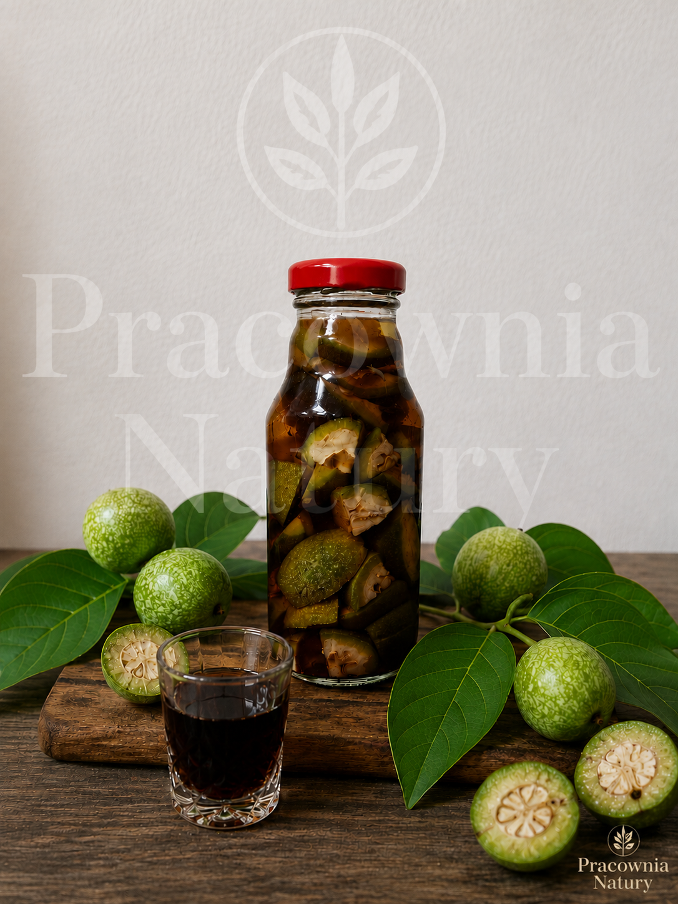
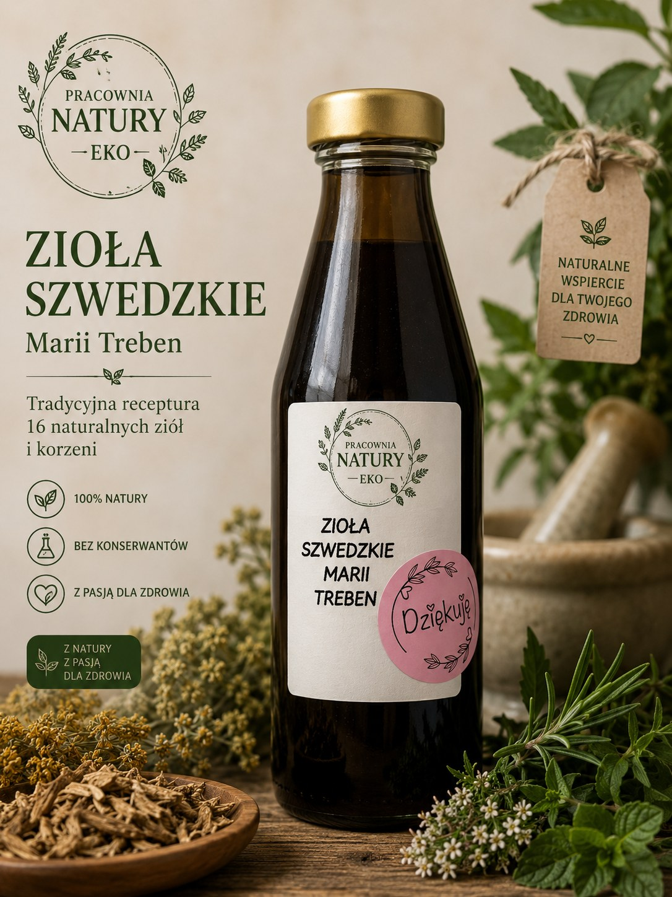

← Powrót do kategorii
Nasze wyroby
Nalewki i ekstrakty
Wybierz konkretny wyrób. Dostępność najlepiej potwierdzić bezpośrednio lub przez ofertę OLX.


Wybierz konkretny wyrób. Dostępność najlepiej potwierdzić bezpośrednio lub przez ofertę OLX.

